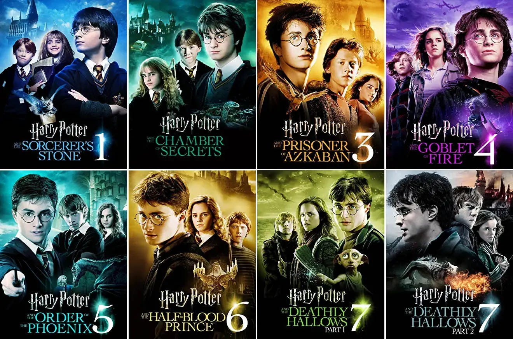
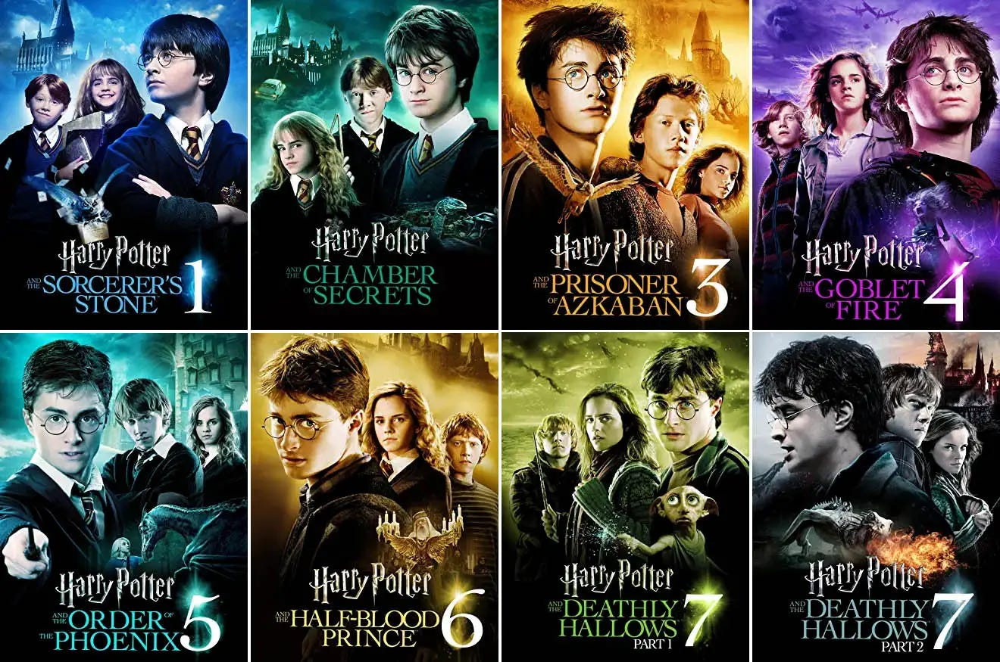

J.K. Rowling was single mother entering her 30's when trying to publish her first book. She was reject 12 times from various publishing agencies before getting her book publish. And that book was none other than "Harry Potter and the sorcer's stone". With this success after failing many times, she went on to write several more books for this series, , spin-offs, and got movies made for them.
 
